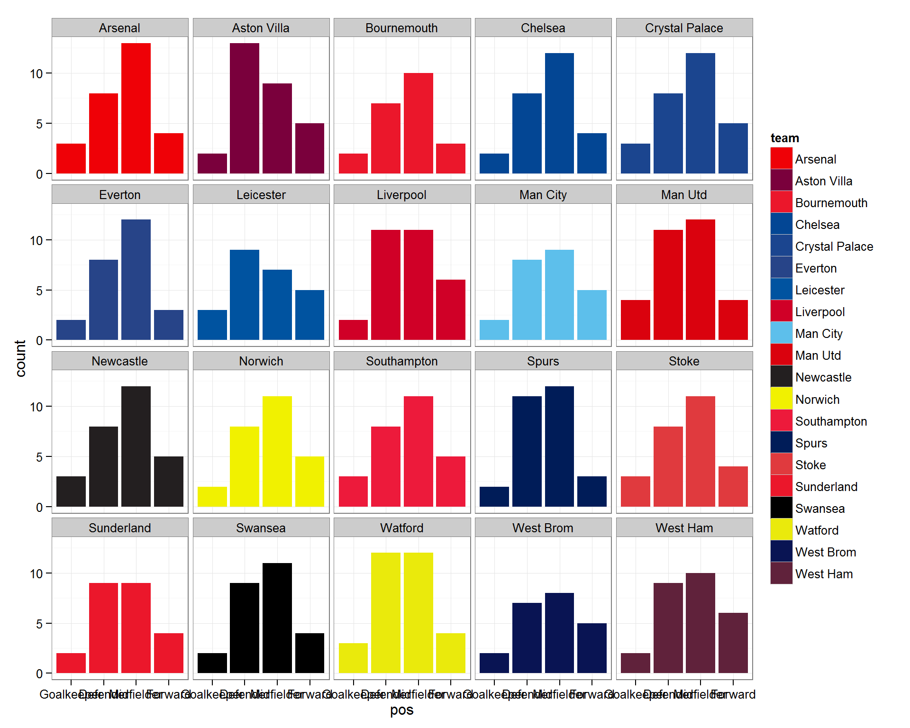

The players dataset contains summary data for individual players in the fantasy.premierleague.com game, the dataset was updated the day before the 2014/15 seasons started so there will be some changes due to players joining and leaving the game.
Once the package has been loaded, to access the dataset:
data(players)The dataframe has dimensions 569 rows and 7 columns.
str(players)## 'data.frame': 569 obs. of 7 variables:
## $ pos : chr "Goalkeeper" "Defender" "Defender" "Defender" ...
## $ team : chr "Arsenal" "Arsenal" "Arsenal" "Arsenal" ...
## $ pts : num 157 155 29 89 50 157 63 0 0 76 ...
## $ id : num 1 2 3 4 5 6 7 8 9 10 ...
## $ name : chr "Szczesny" "Koscielny" "Vermaelen" "Gibbs" ...
## $ value: num 5.5 6 5 5.5 5 6 5 4.5 4.5 6.5 ...
## $ pct : num 12.3 11.2 0.5 3.7 0.2 7.2 0.4 0.1 0.1 4.3 ...There are 7 variables, the players position (‘pos’), their team, points scored last season (‘pts’), id number, name, value (when the package was created), and the percentage of teams the player is selected in (‘pct’)
A simple plot of this data to show the number of players in each position at each of the 20 clubs. We can also use the team_pal() function included in the package.
players$pos <- factor(players$pos, levels = c("Goalkeeper", "Defender",
"Midfielder", "Forward"))
ggplot(players, aes(x=pos, fill=team)) +
geom_bar() +
theme_bw() +
scale_fill_manual(values = team_pal()) +
facet_wrap(~team)